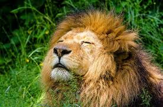
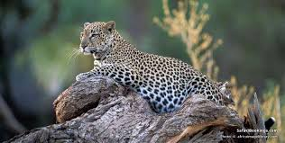
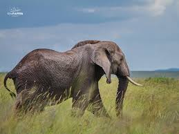
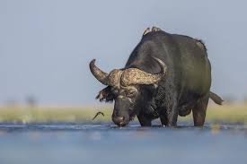
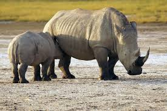
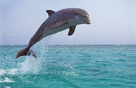
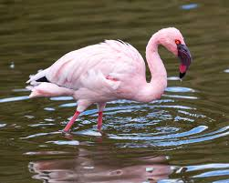
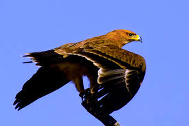
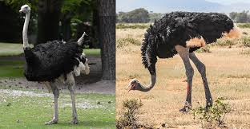

Lion
The lion, known as the king of the jungle, is famous for its majestic mane and powerful presence.
Leopard
Leopards are elusive and agile, recognized for their beautiful spotted coats and stealthy hunting skills.
Elephant
The African elephant is the largest land animal, admired for its intelligence and strong family bonds.
Buffalo
The African buffalo is known for its strength and unpredictable nature, often seen in large herds.
Rhinoceros
Rhinos are distinguished by their impressive horns and thick skin, and are sadly endangered due to poaching.
Marine life
discover
Explore the diverse marine life found along Kenya's coastline, including dolphins, turtles, and vibrant coral reefs.
Dolphin
Dolphins are intelligent and playful marine mammals, often seen leaping through the waves.
Sea Turtle

Sea turtles are ancient reptiles that navigate vast oceans and are known for their long migrations.
Coral Reef

Coral reefs are vibrant underwater ecosystems that support a diverse range of marine life.
Birds
Explore
Kenya is home to a rich variety of bird species, from the striking flamingos to the majestic eagles.
Flamingo
Flamingos are known for their vibrant pink feathers and graceful movements in shallow waters.
Eagle
Eagles are powerful birds of prey, admired for their keen eyesight and soaring flight.
Ostrich
The ostrich is the world's largest bird, known for its speed and distinctive appearance.